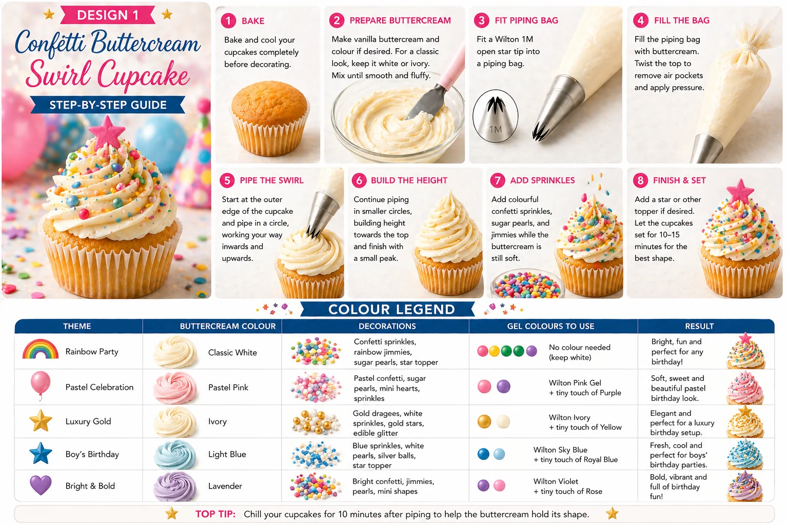
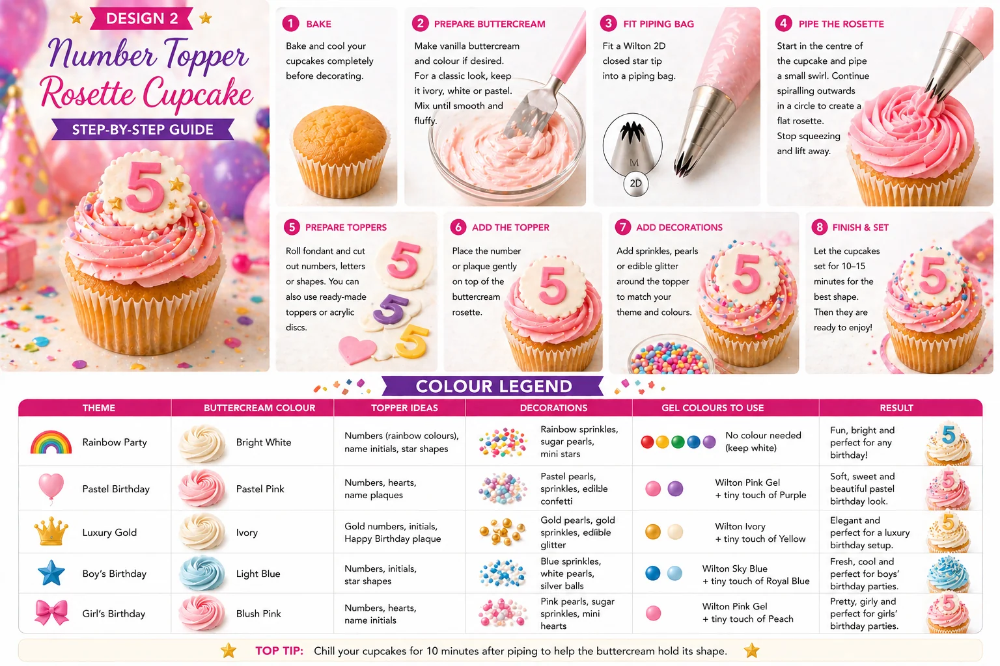

Birthday cupcakes are one of the easiest ways to add colour, personality and fun to a party table. Whether you are planning a children’s birthday, a milestone celebration, a pastel party or a bright rainbow theme, cupcakes can help bring the whole look together.
At Little Moment Studio, our focus is balloon styling and celebration setups, but we know the most beautiful parties feel coordinated from top to bottom. Balloons, backdrops, cupcakes, cake stands and table details all work together to create the final look.
We do not make cakes or cupcakes ourselves, but these ideas are designed to inspire your dessert table. If you would like cupcakes or a cake to match your balloon display, we are happy to recommend a trusted local cake maker.
This guide covers two easy birthday cupcake designs:
- Confetti Buttercream Swirl Cupcakes
- Number Topper Rosette Cupcakes
Both designs are beginner-friendly, colourful and perfect for a birthday dessert table.
Why These Two Designs Work
These two cupcake designs work beautifully together because they create a mix of colour, height and personal detail. The confetti swirl adds height and a classic birthday feel, while the number topper rosette makes the display feel more personalised. Together, they create a balanced cupcake collection that works well with balloon garlands, backdrops, cake stands and party styling.
| Design | Style | Difficulty | Best For |
|---|---|---|---|
| Confetti buttercream swirl | Tall, colourful and fun | Easy | Bright birthday impact |
| Number topper rosette | Personalised and polished | Easy | Age-themed birthday detail |
Confetti Buttercream Swirl Cupcakes

The confetti buttercream swirl is a classic birthday cupcake design. It uses a tall vanilla or pastel buttercream swirl, finished with colourful sprinkles, pearls and an optional fondant star or topper. It is bright, easy and suitable for almost any birthday theme.
What You Will Need
| Item | Purpose |
|---|---|
| Vanilla cupcakes | A simple base for decorating |
| Vanilla buttercream | Main swirl topping |
| Piping bag | Holds the buttercream |
| Wilton 1M piping tip | Creates the tall swirl |
| Confetti sprinkles | Adds birthday colour |
| Sugar pearls | Adds texture and detail |
| Fondant stars or mini toppers | Optional decoration |
| Gel food colouring | Optional, for pastel or themed buttercream |
Best Piping Tip for Confetti Swirl Cupcakes
Use a Wilton 1M open star tip. This creates a tall, defined buttercream swirl with soft ridges and gives a bakery-style finish. It is one of the easiest piping tips for beginners to use — start at the outside edge, spiral inwards and upwards, and finish with a small peak on top.
How to Make Confetti Buttercream Swirl Cupcakes
- Bake and cool the cupcakes. Let them cool completely before decorating. If the cupcakes are still warm, the buttercream will soften and lose its shape.
- Prepare the buttercream. Make a firm vanilla buttercream. Keep it ivory or white, or colour it to match the birthday theme using gel food colouring. Gel colour gives a stronger shade without making the buttercream too soft.
- Fit the piping bag. Fit a piping bag with a Wilton 1M open star tip. Fill the bag with buttercream and push it down towards the nozzle. Twist the top of the bag to remove air pockets and create even pressure.
- Pipe the swirl. Hold the piping bag upright over the cupcake. Start at the outside edge and pipe around the cupcake in a circle. Continue working inwards and upwards until you reach the centre. Finish with a small peak on top.
- Add sprinkles. Add colourful confetti sprinkles while the buttercream is still soft. You can also add sugar pearls, rainbow jimmies, mini fondant stars, hearts or a small topper.
- Let the cupcakes firm slightly. Leave them for 10–15 minutes before boxing or serving to help the buttercream hold its shape.
Colour Ideas for Confetti Swirl Cupcakes
| Theme | Buttercream | Decorations | Result |
|---|---|---|---|
| Rainbow Party | Classic white | Rainbow sprinkles, confetti, sugar pearls, star topper | Bright and fun for any birthday |
| Pastel Celebration | Pastel pink | Pastel confetti, mini hearts, sugar pearls | Soft pastel birthday look |
| Luxury Gold | Ivory | Gold pearls, white sprinkles, gold stars, edible glitter | Elegant birthday setup |
| Boy’s Birthday | Light blue | Blue sprinkles, white pearls, silver balls, star topper | Fresh, cool and classic |
| Bright & Bold | Lavender or pink | Bright confetti, jimmies, pearls, mini shapes | Colourful party feel |
Number Topper Rosette Cupcakes

The number topper rosette cupcake is a simple way to personalise a birthday dessert table. It uses a soft buttercream rosette topped with a fondant number, age topper, initial, name plaque or small birthday disc. This design works especially well for children’s birthdays, milestone birthdays and themed party boxes.
What You Will Need
| Item | Purpose |
|---|---|
| Vanilla cupcakes | A simple cupcake base |
| Buttercream | Main rosette topping |
| Piping bag | Holds the buttercream |
| Wilton 2D piping tip | Creates the rosette effect |
| Number topper or fondant number | Personalises the cupcake |
| Round fondant cutter | Useful for topper discs |
| Letter or number cutters | Optional for handmade toppers |
| Sprinkles or pearls | Adds decoration |
| Gel food colouring | Optional, for themed buttercream |
Best Piping Tip for Number Topper Rosettes
Use a Wilton 2D closed star tip. This creates a soft, floral rosette with a flatter, more elegant finish than a tall swirl — which makes it ideal for placing a number topper or fondant disc on top. Start in the centre and spiral outwards towards the edge of the cupcake.
How to Make Number Topper Rosette Cupcakes
- Bake and cool the cupcakes. Cool cupcakes help the buttercream hold its shape and keep the topper stable.
- Prepare the buttercream. Make a firm vanilla buttercream. Colour it to match the birthday theme, or keep it ivory for a clean, simple look.
- Fit the piping bag. Fit a piping bag with a Wilton 2D closed star tip. Fill the bag with buttercream and push it down towards the nozzle.
- Pipe the rosette. Hold the piping bag upright over the centre of the cupcake. Start in the centre and pipe a small curl. Continue spiralling outwards towards the edge of the cupcake to create a flat rosette. Stop squeezing before lifting the piping bag away so the end looks neat.
- Prepare the number topper. Use a ready-made number topper, fondant number, acrylic topper or small fondant disc. For a handmade topper, roll fondant to around 2–3mm thick, cut out a small circle or scalloped disc, then add a fondant number or initial. Let the topper firm up slightly before placing it onto the cupcake.
- Add the topper. Place the number topper gently on top of the rosette. Press lightly so it sits securely without flattening the buttercream.
- Add decorations. Add sprinkles, pearls or edible glitter around the topper to match the birthday theme. Keep decorations light so the number remains the focus.
- Let the cupcakes set. Leave them for 10–15 minutes before boxing or serving.
Colour Ideas for Number Topper Rosette Cupcakes
| Theme | Buttercream | Topper Ideas | Result |
|---|---|---|---|
| Rainbow Party | Bright white | Rainbow number, name initials, star shapes | Fun, bright and party-ready |
| Pastel Birthday | Pastel pink | Numbers, hearts, name plaques | Soft and pretty |
| Luxury Gold | Ivory | Gold numbers, initials, Happy Birthday plaque | Elegant and premium |
| Boy’s Birthday | Light blue | Numbers, initials, star shapes | Fresh and classic |
| Girl’s Birthday | Blush pink | Numbers, hearts, name initials | Soft and feminine |
Key Difference Between the Two Piping Methods
The two designs are piped differently. For the confetti swirl, build upwards to create height. For the number topper rosette, keep the piping flatter so the topper sits neatly.
| Design | Start Piping | Finish Piping | Result |
|---|---|---|---|
| Confetti buttercream swirl | Outside edge | Centre / top peak | Tall birthday swirl |
| Number topper rosette | Centre | Outer edge | Flat rosette for a topper |
How to Style Birthday Cupcakes on a Dessert Table
A birthday dessert table looks best when the cupcakes match the rest of the party styling. Choose a clear colour palette and repeat it across the cupcakes, balloons and table details.
Good display ideas include:
- Cake stands in different heights
- Balloon garlands behind or above the table
- Personalised backdrops
- Table confetti and themed plates
- Number balloons to match the age toppers
- Matching cupcake cases
- Gift boxes and party hats as table decoration
Good Birthday Colour Palette Ideas
| Theme | Colours |
|---|---|
| Rainbow Party | Red, yellow, green, blue, pink and purple |
| Pastel Birthday | Pink, lilac, mint, baby blue and ivory |
| Luxury Birthday | Ivory, blush, gold and champagne |
| Boy’s Birthday | Blue, green, silver and white |
| Girl’s Birthday | Pink, peach, gold and ivory |
| Modern Neutral | Beige, white, sage and soft gold |
Suggested Cupcake Box
Box of 12:
| Quantity | Design |
|---|---|
| 6 | Confetti buttercream swirl cupcakes |
| 6 | Number topper rosette cupcakes |
Box of 6:
| Quantity | Design |
|---|---|
| 3 | Confetti buttercream swirl cupcakes |
| 3 | Number topper rosette cupcakes |
The swirl cupcakes add colour and height, while the number topper cupcakes add a personalised birthday detail.
Beginner Tips for Better Results
- Keep buttercream firm. If the swirl or rosette loses shape, chill the buttercream briefly or add a little more icing sugar before continuing.
- Use sprinkles sparingly. A few well-placed sprinkles often look more considered than covering the whole cupcake.
- Keep the rosette flat. For the number topper rosette, start in the centre and spiral outwards while keeping the piping flat — this gives the topper a stable, level surface to sit on.
- Let toppers firm first. Allow buttercream to set slightly before adding heavier toppers, or use lightweight fondant or wafer-style toppers to avoid sinking.
- Match colours to the rest of the setup. Choose the cupcake colours after choosing the balloon and backdrop colours, so the whole table feels coordinated.
- Make the day before if needed. Both designs hold well overnight in a cool, dry place — and the number toppers actually benefit from being made ahead so they firm up properly.
Your Questions Answered
Can you make birthday cupcakes the day before?
Yes. Store them in a covered cupcake box or airtight container in a cool, dry place. If using fondant toppers, keep them away from humidity as fondant can become sticky. The number toppers can be made ahead and left to firm up — which is actually recommended for the best result.
How do you transport birthday cupcakes safely?
Use a proper cupcake box with inserts so the cupcakes cannot move around. Number topper rosette cupcakes are easier to transport because they are flatter. Confetti swirl cupcakes are taller — check the box has enough height clearance. If toppers are delicate, add them after transport. Keep cupcakes out of direct sunlight and away from heat.
What if the buttercream swirl loses shape?
The buttercream is too soft. Chill it in the bowl for 5–10 minutes, then beat briefly before refilling the piping bag. In a warm kitchen this can happen quickly — work in small batches and chill between sessions if needed.
What if the topper sinks into the buttercream?
Let the buttercream firm for a few minutes before adding heavier toppers. Lightweight fondant or wafer-style toppers are also easier to work with. The rosette is a naturally flatter surface than the swirl, so it is more forgiving for toppers.
Useful Tools
- Wilton 1M open star piping tip
- Wilton 2D closed star piping tip
- Disposable piping bags
- Number cutters and letter cutters
- Round fondant cutter
- Confetti sprinkles
- Sugar pearls
- Edible glitter
- Gel food colouring
- Cupcake boxes with inserts
Complete the Birthday Party Look
Cupcakes are only one part of a beautiful birthday setup. To create a coordinated party table, match the cupcakes with your balloons, backdrop and table decor.
For example: rainbow cupcakes pair well with bright balloon garlands; pastel cupcakes work beautifully with soft pink, lilac, mint and blue balloons; ivory and gold cupcakes suit a luxury birthday setup; and number topper cupcakes can match age balloons or personalised signage.
For more birthday styling ideas, see our guide to birthday balloons in Kent and our article on how to match cupcakes with your balloon display.
For more cupcake design ideas, see our guides to baby shower cupcake ideas and fondant cupcake ideas for celebrations.
At Little Moment Studio, we can help you create a coordinated balloon display, backdrop and colour palette for your birthday celebration. We can also recommend a trusted local cake maker if you would like cupcakes or a cake to complement your dessert table.
Planning a Birthday Celebration in Kent?
Little Moment Studio creates coordinated balloon displays, garlands and backdrops for birthdays across Sittingbourne and Kent. We can also point you towards a trusted local cake maker to complete the table.